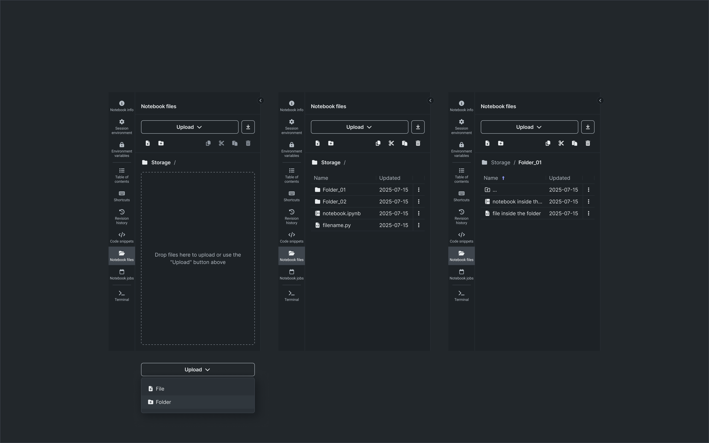
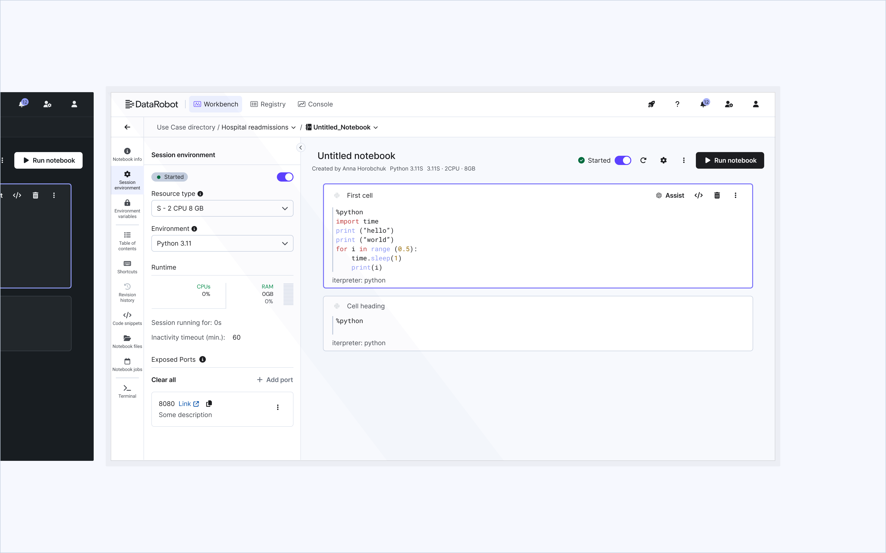

Case study
Built in Notebooks
DataRobot Notebooks: designing a fully hosted, Jupyter-compatible environment for rapid prototyping and exploratory analysis.

- Role
- Product designer
- Team
- Design, Engineering, Product
- Timeline
- 1 year+
Overview
To kick off the design process, I researched how notebooks were actually being used across the DataRobot platform. DataRobot Notebooks is a fully hosted, Jupyter-compatible environment used for rapid prototyping, model evaluation, and exploratory analysis - but as adoption grew, usage patterns revealed real friction: notebooks were increasingly used as the code-first complement to automated workflows, with users switching between no-code pipelines and custom code to fill gaps the automation couldn't handle. Identifying this as the most frequent usage pattern shaped the direction for the rest of the design.
Interface Elements & Features



